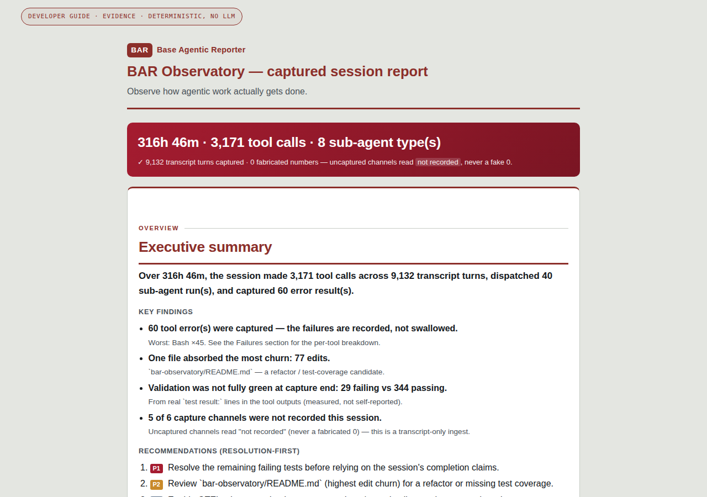

Wiki · report guide
Every section below is annotated from the real shipped example —
real-session.report.json — not
a mock-up written to look good. Where a section is empty, that's shown too: an unbuilt feature
reads not_observed, the same as an uncaptured channel, never silently omitted.

The actual rendered report this page annotates. Open it yourself: real-session.report.html
Walkthrough
The header. Orientation before detail.
Elapsed time, tool-call count, sub-agent-type count, transcript turns captured — the numbers a reader needs before anything else. The real bar for this session:
"0 fabricated numbers" isn't a slogan here — it's the schema's own absence rule, visible as the first thing you read.
One paragraph, assembled from fields — never composed by a model.
A single sentence stitched from real counters, not written prose:
Compare this to bar interpret's output: that one is LLM-written
prose, and is labeled as such wherever it appears. This one is template substitution over
typed fields — swap the database, the sentence updates itself; nothing here was composed.
What the detectors actually found, each with its own evidence line.
Four findings, each a plain claim with a supporting detail underneath it — not a single undifferentiated wall of text:
Each of these traces to a section further down this page — the findings aren't a separate narrative, they're a summary of facts that are also shown in full.
Resolution-first, priority-tagged, grounded in the findings above.
Four recommendations, each tagged P1/P2/P3 by how directly it follows from captured evidence — not a generic best-practices list:
What was attempted, and how each item's state was determined.
40 tasks total this window — all 40 completed (100%, self-reported). Every row carries its own evidence type rather than a bare status:
self_reported is disclosed as exactly that — the task tool said "done,"
which is evidence of a claim, not independent proof of correctness. Compare that honestly
against §08's validation evidence, which is measured from real test output instead.
Which tools, and how hard, ranked by real call counts.
Fifteen distinct tools appear in the full record; this is the ranked head of that list, exactly as captured — nothing rounded, nothing merged.
What got delegated, and to which agent type.
A session that spawns helper agents can hide its real failure surface inside them — this section is why that no longer works. Every dispatch is counted by type, whether or not the parent session's own summary mentioned it.
Where effort concentrated — a signal about the work, not a score.
77 of that window's 496 total edits — more than the next four files combined — landed in one file. The report doesn't editorialize about why; it just makes the concentration impossible to miss, which is usually enough to prompt the right question.
Measured from real test output — not a self-reported "tests pass."
A test that flips between pass and fail across the same session is a real signal — could be a fix landing mid-session, could be a regression, could be flakiness. The report doesn't guess which; it surfaces the flip and lets a human or agent decide.
Unbuilt features disclosed as not_observed, not omitted.
This is the clearest example on this page of the rule this whole project is built around: a capability that doesn't exist yet is stated as absent, in the same schema position a real finding would occupy — never a quietly empty section that looks like "nothing to report" when the honest answer is "not measured."
Capture & integrity
Which channels actually had data.
Five of six channels read not_recorded here because this capture was a
transcript-only ingest — no hooks, proxy, or OTLP were running. That's disclosed plainly
rather than left for a reader to assume from silence.
What actually makes "byte-identical" a checkable claim, not a slogan.
The report's own hash of the database it came from, plus a hash of the template that rendered it. Re-render the same database with the same template version and these two values — and every fact above them — come out identical. That's what "same database in, byte-identical report out" cashes out to at the field level.
bar doctor surfaces the same capture-honesty information before you even open a
report. See wiki/architecture.md for the full absence-semantics
and determinism-contract writeup.